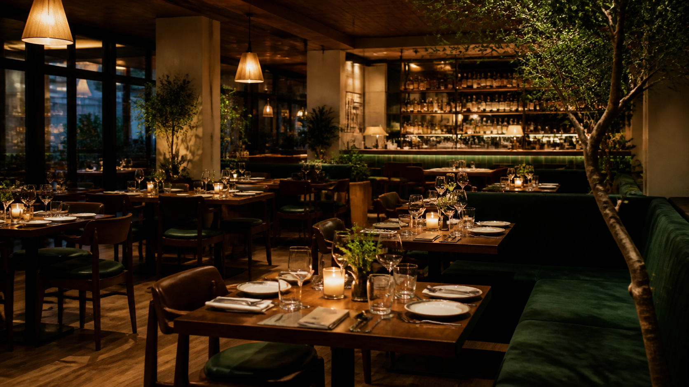

"The pasta and service were excellent. Booking online was easy and the restaurant looked exactly like the photos."
Neighborhood Bistro
Seasonal plates, warm service, and relaxed evening dining.
Casa Verde Bistro brings fresh ingredients, handcrafted mains, and a calm dining room to guests looking for an elevated local restaurant experience.

Guest Reviews
Trusted by locals for cozy dinners and private celebrations.
"Casa Verde is our go-to for client dinners. The menu is refined without feeling intimidating."
Daniel Cruz
"We reserved a table for a birthday dinner and the team made everything smooth from start to finish."
Angela Reyes
CV
Google Maps
Casa Verde Bistro
18 Garden Avenue, Makati City
Open Tue-Sun, 11:00 AM - 10:00 PM
Reservations
Make it easy for guests to choose a date, party size, and contact method.
A real restaurant website needs a confident reservation section, clear hours, location details, and a simple call to action on every major page.